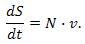
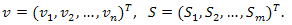
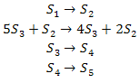
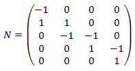

Stoichiometric Matrix
The stoichiometric matrix N provides the linear relationship of the model between the flux rates
of the (enzymatic) reactions and the derivatives of the reactant (enzyme) concentrations.
If a reaction network has n reactions and m participating molecular species
then the dynamic mass balance equation can be written as

where v is the flux vector and S is the concentration vector:

Example
Consider the following system of reactions:

This systems comprises four reactions and five different molecular species.
The stoichiometry matrix for this system can be written as:

where the rows correspond to S1, S2,
S3, S4 and S5, respectively.
Note that the process of converting a reaction scheme into a stoichiometry matrix
can be a lossy transformation, for example, the stoichiometries in the second reaction
simplify when included in the matrix.